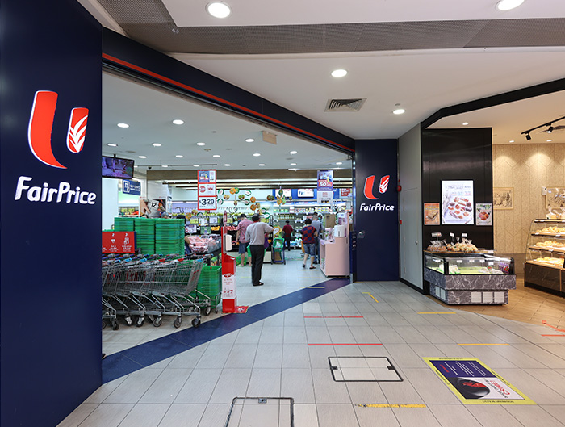

This project develops two machine learning systems for Singapore's housing market: one, an unsupervised system recommending properties by clustering similar features; two, a supervised model predicting resale prices from historical data and property characteristics. Both involve intensive data preprocessing, model training, and optimization, aiming to equip real estate stakeholders with practical insights and tools.


In this project, supervised and unsupervised learning are applied to the Boston Housing dataset. Unsupervised learning, using methods like K-means or PCA, identifies patterns and groups houses with similar traits. In contrast, supervised learning predicts housing prices by training algorithms such as linear regression or decsion tree on historical data. Both techniques focus on extracting significant insights, either through pattern discovery or accurate price forecasting.

deforestation report offers a data-driven examination into global forest loss, highlighting human activities, particularly dam construction and mining, as primary contributors. The study compiles multi-regional data across several years, indicating a troubling environmental trend. However, the report's fragmented structure suggests a need for additional analysis to fully understand the broader implications.

This project utilizes R to simulate and optimize the queuing system at NTUC supermarkets, focusing on customer arrival and service processes. By analyzing data or estimated distributions related to customer flow, the simulation seeks to identify bottlenecks and test strategies for queue management, aiming to enhance efficiency and customer satisfaction through reduced wait times and streamlined service.

This project employs FlexSim simulation software to model and enhance the queuing system at Don Don Donki stores. It involves simulating customer arrivals and queues, then experimenting with structural changes to the queue configurations. The goal is to identify optimizations that reduce wait times and improve customer flow, with efficacy assessed through iterative simulation runs.